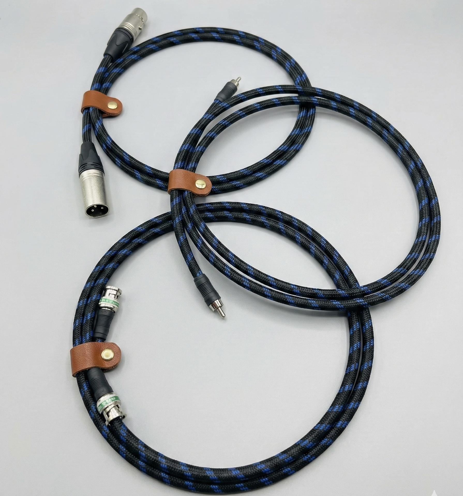
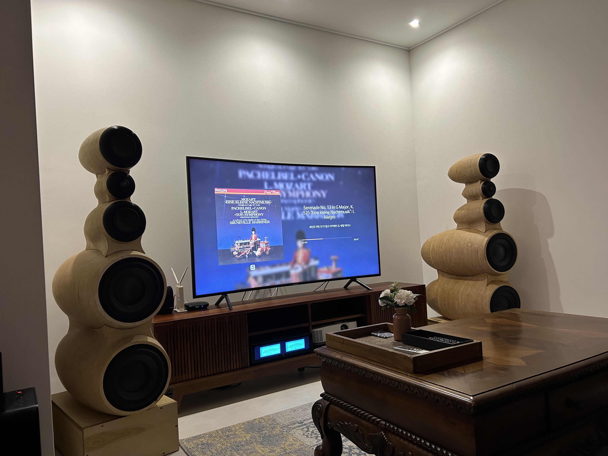

연구 개발
최고의 음향 경험을 위한 전체 솔루션 제공

오디오 케이블 및 전원
오디오 케이블, 멀티탭
국제표준 규격 오디오 신호전송을 위한 오디오 케이블 연구
디지털 오디오 케이블
오디오 전용 멀티탭

음향 기기
파워앰프, 오디오 AI
최적 음향 재생을 위한 파워앰프 설계 및 오디오 AI를 이용한 음향 분석
파워 앰프
오디오 AI
음장 제어

스피커 시스템
모니터링 스피커, 서브우퍼 스피커
AI를 활용한 스피커 및 청음실 음향특성 최적화
모니터링 스피커
서브우퍼 스피커
청음실 음장 제어